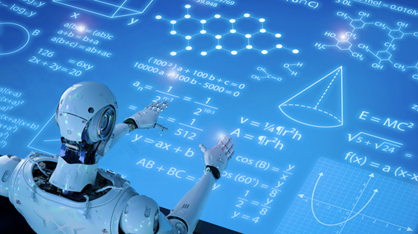
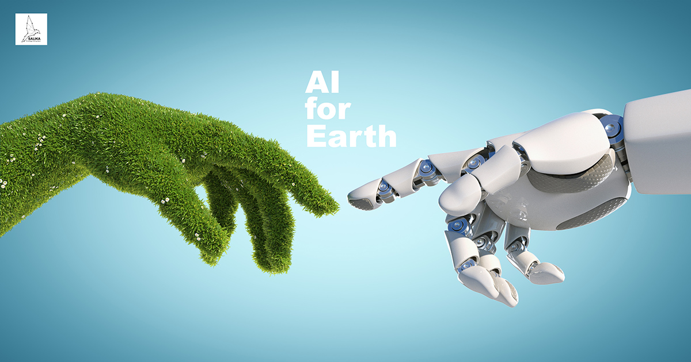

Історія створення Штучного Інтелекту (ШІ) налічує кілька етапів розвитку, пройдених від перших концепцій до сучасних технологій глибокого навчання.
Ось короткий огляд історії створення ШІ:
Ранні ідеї (1940-х - 1950-х рр.): Перші концепції ШІ виникали ще у 1940-х роках. У 1956 році відбувся історичний "Літній дартмутський семінар", на якому було сформульовано основні принципи та завдання ШІ.
Період ентузіазму та розчарувань (1950-1970 рр.): У цей період виникало багато нових ідей та концепцій, але відсутність сучасних обчислювальних ресурсів та несуттєва продуктивність систем призвели до розчарувань. Цей період часто називають "зимою ШІ".
Експертні системи та розквіт (1980-1990 рр.): В цей період з'явилися експертні системи, засновані на правилах, що дозволили вирішувати конкретні завдання. Інші підходи, такі як нейронні мережі, також отримали деяке визнання.
Падіння інтересу (1990-2000 рр.): Відсутність значущих досягнень та важкості у досягненні поставлених завдань призвело до зменшення інтересу до ШІ.
Ренесанс глибокого навчання (2010 р. - теперішній час) : З'явлення потужних обчислювальних ресурсів та великих обсягів даних сприяло розвитку глибокого навчання. Методи, такі як нейронні мережі, принесли вражаючі результати у багатьох областях, від розпізнавання образів до природної мови.
Зараз ШІ активно застосовується в різних сферах, включаючи медицину, фінанси, транспорт, освіту та багато інших, вносячи суттєві зміни в різні аспекти сучасного суспільства.
Що таке Штучний Інтелект?
Штучний Інтелект (ШІ) — це філія комп'ютерної науки, що вивчає розробку програм та пристроїв, здатних виконувати завдання, які раніше вважалися виключно інтелектуальними здібностями людини.
Основна мета ШІ — створення систем, що можуть адаптуватися до різноманітних завдань, вчитися на основі даних, а також самостійно приймати рішення.
ШІ використовує різноманітні методи, такі як машинне навчання, нейронні мережі та обробка природної мови для досягнення своїх цілей.
Ця галузь науки включає в себе такі аспекти, як розпізнавання образів, обробка природної мови, робототехніка та багато іншого.
ШІ допомагає вирішувати завдання, які раніше вважалися неможливими для автоматизації, і вносить істотний вклад у розвиток сучасної технології.
Можливості ШІ розширюються щодня, відкриваючи нові горизонти для застосування цієї технології у різних галузях життя.
Очікується, що у майбутньому Штучний Інтелект стане неодмінною частиною нашого щоденного існування, полегшуючи рутинні завдання та вирішуючи складні проблеми.
Зростаючий інтерес до ШІ свідчить про його потенційний вплив на різні сфери людського життя, що відкриває шлях до нових можливостей та викликів.
Важливо враховувати етичні аспекти розвитку ШІ, забезпечуючи його використання на благо всього суспільства.
Процес створення Штучного Інтелекту
Створення Штучного Інтелекту — це складний і захоплюючий процес, який включає в себе кілька ключових етапів:
Збір та аналіз даних: Найважливішим етапом є збір великої кількості даних, які використовуються для тренування моделей ШІ. Це можуть бути тексти, зображення, аудіо або інші дані, залежно від конкретного завдання.
Обробка та підготовка даних: Очищення та форматування даних грає важливу роль в створенні ефективних моделей. На цьому етапі використовуються методи обробки природної мови, обробки зображень та інші техніки.
Вибір моделей та алгоритмів: Вибір правильної моделі або алгоритму залежить від конкретного завдання ШІ. Деякі популярні варіанти включають нейронні мережі, машинне навчання з учителем та навчання без учителя.
Тренування та тестування: На цьому етапі модель ШІ тренується на підготованих даних та перевіряється на тестових наборах. Це дозволяє оцінити її ефективність та виправити можливі помилки.
Впровадження: Після успішного тренування модель може бути впроваджена в реальне середовище, де вона буде використовуватися для вирішення конкретних завдань.
Важливо відзначити, що розробка ШІ — це динамічний процес, який вимагає постійного оновлення та вдосконалення моделей відповідно до змін у вихідних даних та умовах використання.
Працюючи в цьому напрямку, дослідники та розробники Штучного Інтелекту вносять вагомий внесок у розвиток технології та створення нових можливостей для її застосування.
Застосування ШІ в сучасному світі
Використання Штучного Інтелекту стає все більш розповсюдженим і змінює динаміку багатьох сфер життя. Давайте розглянемо кілька конкретних застосувань:
Розпізнавання образів: ШІ використовується для точного розпізнавання облич, об'єктів та навіть емоцій на фотографіях.
Голосові асистенти: Відомі системи, такі як Siri та Alexa, використовують ШІ для розуміння та виконання голосових команд.
Прогнозування погоди: Моделі ШІ аналізують величезні обсяги даних для точного прогнозу погоди на майбутнє.
Геноміка: В галузі біотехнологій ШІ використовується для аналізу геномних даних та розробки індивідуалізованих лікувань.
Експертні системи в медицині: ШІ допомагає в діагностиці та розробці лікувань для різних захворювань.
Галузь фінансів: ШІ використовується для аналізу ринков, автоматизації торгівлі та оптимізації інвестиційних стратегій.
Ці застосування свідчать про широкий спектр впливу ШІ на наш світ, і це тільки початок великої технологічної революції.
Ми стаємо свідками стрімкого розвитку і впровадження Штучного Інтелекту, який формує майбутнє і трансформує те, як ми бачимо та використовуємо технології.
Сподіваємося, що ця технологічна ера принесе нові можливості і полегшить багато аспектів нашого повсякденного життя.
Необхідно пильно спостерігати за розвитком Штучного Інтелекту і забезпечувати його відповідальне та етичне використання в суспільстві.
ШІ в автономних автомобілях
Однією з важливих областей застосування Штучного Інтелекту є автономні автомобілі. ШІ грає ключову роль у розробці систем об'єктного визначення, розпізнаванні дорожніх знаків, плануванні маршруту та адаптації до різних дорожніх умов.Штучний Інтелект в автономних автомобілях грає критичну роль у забезпеченні безпеки та ефективності їх функціонування. Ось деякі засоби, якими ШІ використовується в автономних автомобілях:
1. Системи розпізнавання об'єктів: ШІ використовується для розпізнавання дорожніх знаків, пішоходів, інших транспортних засобів та перешкод.
2. Системи управління та прийняття рішень: Машинне навчання використовується для розв'язання складних завдань управління, прийняття рішень та планування маршрутів в реальному часі.
3. Адаптація до дорожньої обстановки: ШІ дозволяє автомобілю адаптуватися до змін в дорожній обстановці, таких як зміни в русі транспорту, дорожні роботи або інші непередбачувані ситуації.
4. Системи допомоги при паркуванні: Автомобілі оснащені системами, які використовують ШІ для допомоги водієві під час паркування, розпізнавання вільних місць та уникнення зіткнень.
5. Взаємодія з іншими транспортними засобами: ШІ допомагає автомобілю взаємодіяти з іншими транспортними засобами, зокрема, за допомогою системи обміну інформацією між автомобілями (V2V) та інфраструктурою (V2I).
6. Системи уникнення аварій:ШІ використовується для попередження можливих аварій, виявлення небезпечних ситуацій та автоматичного застосування гальм або керування для уникнення зіткнень.
Використання Штучного Інтелекту в автономних автомобілях сприяє покращенню їх ефективності, безпеки та здатності адаптуватися до різних умов руху.
ШІ в ігровій індустрії
Штучний Інтелект (ШІ) в ігровій індустрії використовується для реалізації різноманітних функцій, спрямованих на поліпшення геймплею, створення більш реалістичного інтелекту штучних персонажів та вдосконалення графіки та звуку. Ось деякі аспекти, в яких ШІ знаходить застосування в ігровій індустрії:
1. Розумні NPC (персонажі, керовані комп'ютером): ШІ використовується для створення вражаючо реалістичних та інтелектуальних NPC, які можуть реагувати на дії гравця, взаємодіяти з оточенням та виконувати складні алгоритмічні завдання.
2. Адаптивний геймплей: Системи ШІ можуть аналізувати стиль гравця та його вибори, пристосовуючи геймплей для забезпечення більш персоналізованого і захоплюючого досвіду.
3. Розпізнавання голосу та обличчя: ШІ використовується для реалізації систем розпізнавання голосу та обличчя, що може бути використано для інтерактивності та введення команд гравця.
4. Динамічна графіка: Алгоритми ШІ можуть допомагати створювати більш реалістичну графіку, враховуючи освітлення, тіні, текстури та інші аспекти.
5. Прогресивне навчання: ШІ може використовуватися для навчання персонажів в грі на основі досвіду гравця, дозволяючи їм адаптуватися до стратегії гравця та стає більш ефективними в протистоянні.
6. Системи управління густини населення: ШІ допомагає створювати ефективні системи управління та моделювання густини населення в ігрових світах.
7. Інтелектуальні помічники та супутники: Гравці можуть взаємодіяти з ігровими персональними помічниками або супутниками, які використовують ШІ для реалістичної комунікації та виконання різноманітних завдань.
Ці технології не лише зроблюють ігри більш захоплюючими, але й створюють нові можливості для творців ігор у створенні унікальних та невідомих раніше ігрових досвідів.
ШІ в енергетиці
Штучний Інтелект (ШІ) також знаходить широке застосування в галузі енергетики, допомагаючи оптимізувати виробництво, підвищувати ефективність та управляти енергетичними ресурсами. Ось деякі з важливих застосувань ШІ в енергетичній галузі:
1. Прогнозування попиту на енергію: ШІ використовує аналіз великих обсягів даних для точного прогнозування попиту на електроенергію. Це дозволяє енергетичним компаніям ефективніше регулювати виробництво та розподіл енергії.
2. Оптимізація виробництва: ШІ використовується для автоматизації та оптимізації процесів виробництва електроенергії. Алгоритми ШІ допомагають зменшити витрати та підвищити продуктивність енергетичних установок.
3. Управління енергосистемами: ШІ дозволяє розробляти імітаційні моделі та алгоритми для управління енергосистемами, включаючи розподіл енергії, мережеві та електропередачі.
4. Моніторинг та діагностика обладнання: Системи ШІ можуть постійно відстежувати стан обладнання в енергетичних установках, передбачати можливі поломки та запобігати аварійним ситуаціям.
5. Енергоефективність будівель: Застосування ШІ для управління системами опалення, кондиціювання повітря та освітлення може допомогти зменшити енергоспоживання в будівлях та підвищити їхню енергоефективність.
6. Використання відновлювальних джерел енергії: ШІ допомагає ефективніше використовувати відновлювальні джерела енергії, такі як сонячна та вітрова енергія, через прогнозування та оптимізацію їх виробництва.
7. Смарт-мережі: Використання ШІ у створенні смарт-мереж дозволяє покращити моніторинг, управління та оптимізацію енергозабезпечення для кінцевих споживачів.
Загальною метою впровадження ШІ в енергетиці є створення більш стійких, ефективних та екологічно чистих систем енергопостачання.
ШІ в освіті
Штучний Інтелект (ШІ) відіграє значущу роль у сфері освіти, вносячи інновації у навчальні процеси та забезпечуючи індивідуалізацію навчання. Ось кілька способів, які ШІ використовується в освіті:
1. Персоналізоване навчання: Системи ШІ в змозі аналізувати дані про навчання кожного учня та надавати індивідуалізовані завдання та матеріали для максимізації навчального процесу.
2. Електронні підручники та інтерактивні засоби навчання: Використання ШІ для створення інтерактивних підручників та навчальних засобів сприяє більш ефективному засвоєнню матеріалу.
3. Оцінювання та звітність: ШІ може допомагати в автоматизації процесів оцінювання та формуванні звітів, що зменшує рутинну роботу для вчителів і надає більше часу для індивідуального взаємодії з учнями.
4. Чат-боти в освітніх системах: Використання чат-ботів на освітніх платформах може допомагати учням з отриманням відповідей на питання, надавати додаткову підтримку та орієнтувати в навчальному процесі.
5. Мовні та освітні додатки: Розробка мовних та освітніх додатків за допомогою ШІ дозволяє створювати зручні інструменти для вивчення мов, математики, наук та інших предметів.
6. Системи рекомендацій для вибору курсів: ШІ може аналізувати інформацію про учнів, їхні інтереси та навички, щоб рекомендувати оптимальні курси та навчальні програми.
7. Віддалене навчання та тести з ШІ: Використання систем ШІ дозволяє проводити віддалені навчання, оцінювання та тести, що стало особливо актуальним у сучасних умовах.
ШІ в освіті сприяє створенню більш доступних, ефективних та інноваційних навчальних середовищ, сприяючи розвитку навичок, необхідних у сучасному цифровому світі.

ШІ в сфері екології
Штучний Інтелект (ШІ) в сфері екології використовується для здійснення прогнозувань, моніторингу довкілля, оптимізації екологічних процесів та вирішення проблем, пов'язаних з охороною навколишнього середовища. Ось деякі конкретні застосування ШІ в екології:
1. Моніторинг довкілля: Системи ШІ можуть аналізувати дані, отримані з супутників, датчиків та інших джерел, для постійного моніторингу якості повітря, води, ґрунту та інших екологічних параметрів.
2. Прогнозування змін клімату: ШІ використовується для аналізу величезних обсягів кліматичних даних, щоб робити точні прогнози змін клімату, ризиків пов'язаних із змінами клімату та розробляти стратегії пристосування.
3. Управління відходами: ШІ може оптимізувати процеси сортування відходів, визначати ефективні шляхи їх переробки та вдосконалювати системи утилізації.
4. Охорона біорізноманіття: ШІ допомагає в моніторингу та аналізі екосистем для збереження та відновлення біорізноманіття.
5. Ефективне використання ресурсів: Системи ШІ можуть оптимізувати використання енергії та інших ресурсів, щоб зменшити вплив на довкілля.
6. Прогнозування природних катастроф: Алгоритми ШІ можуть аналізувати дані для прогнозування та мінімізації збитків від природних катастроф, таких як повені, землетруси та лісові пожежі.
7. Екоінформаційні системи: Розробка систем, що надають широкий доступ до інформації про екологічні проблеми, сприяє освіті та участі громадськості у збереженні навколишнього середовища.
ШІ в екології відіграє ключову роль у розв'язанні сучасних проблем збереження природи та створенні стійких екологічних систем.
